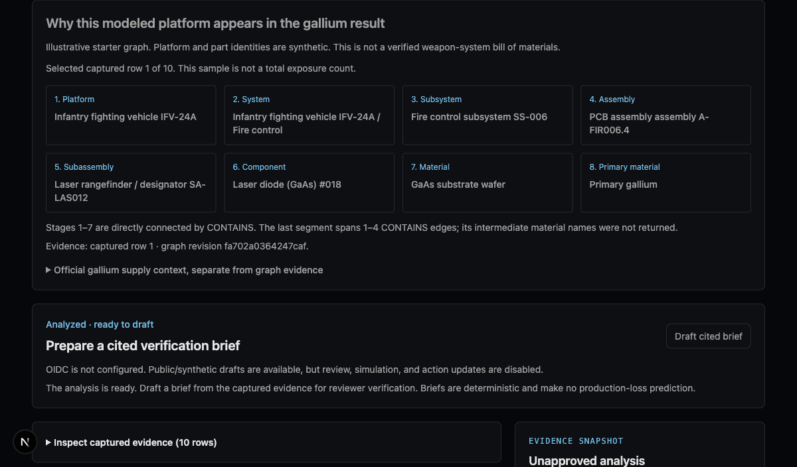

One disruption. Explain the dependency. Own the next step.
Captured graph evidence, cited verification, and accountable follow-up for a European defence-prime supply-chain analyst.
The recurring decision
Which platforms might be exposed—and what must we verify?
Trace
Find modeled dependencies across multiple BOM tiers.
Inspect
Keep the captured revision, cited row, and coverage gaps with the claim.
Verify
Assign inventory, alternative-material, and timing checks to an authorized owner.
Buyer hypothesis: a defence-prime programme/supply-chain resilience lead. No validated demand or production-loss forecast is claimed.
Actual live graph rehearsal
From a modeled platform to primary gallium

Two evidence layers
Real material context. Illustrative dependency model.
USGS 2026 reports China accounted for 99% of worldwide primary low-purity gallium production.
Gallium appears on the European Commission's 2023 critical raw materials list.
Neither source verifies the starter model's platform BOM. These are not EU-import shares, high-purity production shares, or evidence of programme stoppage.
Our contribution beyond the starter
Analysis becomes a retained decision record
Reviewed, isolated reads with graph revision and query provenance.
Stored-row citations, verification briefs, and transactional review/action audit.
Scoped work views, eligible-owner selection, acknowledgment and outcomes.
Linked pending revisions that leave the prior decision unchanged.
118 TypeScript tests and 6 Python boundary tests passed. Real local OIDC browser sign-in, live graph capture, reviewer approval/assignment, separate owner acknowledgment/outcome, and reviewer finding reassessment were rehearsed. Fixed synthetic accounts; no real buyer identity provider validated. Attribute event-period work against the organizer-confirmed build window before presenting.
Deployment and next proof
A focused prototype; a measurable pilot next
Next.js interface · TypeScript agent · SQLite case records · Python/TuringDB sidecar.
One buyer-approved reference dataset and impact question.
Check dependency accuracy, coverage gaps, and time to a review-ready brief.
Validate identity, private data handling, hosting and export-control constraints.
Ask: a defence-prime design partner to validate the recurring decision.